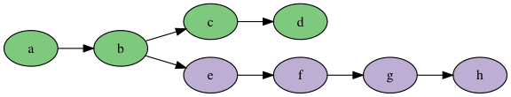
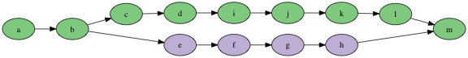
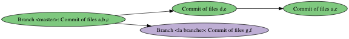

Getting Started with Git
Table of Contents
1 About This Text
This text provides a brief introduction to git. This is not something you need to learn in this course, but is provided for your convenience.
2 User Stories covered in this Sprint
- As a student I want to understand how to work with git because it is required of me in this cours.
- As a student I want to understand how to work with git so that I increase my employability.
3 Introduction
The basic idea with configuration management is that it enables collaboration over the same files, and it keeps track of which versions of files (=configurations) are available and perhaps released to specific customers.
3.1 Working Copy vs Repository
Borrowing a bit of terminology from subversion, the files you have on your hard drive are a working copy of a project. It is called thus because it is a copy of what is available in the configuration management system, and you are able to work on it. When you are done with whatever feature you are implementing, you upload your working copy back into the configuration management system, thus creating new versions of the touched files there.
The collection of all your files in the configuration management system is called a repository, or repo for short. So in order to work on a particular project, you first need to create or find its repository, then download a working copy to your machine.
3.2 Branching
In git, your working copy is in fact a clone of the entire repository, with the entire history. This means that you can move back and forth between versions, and between different configurations of all files.
Central to most configuration management, and git in particular, is the concept of branching. Consider the repository below:

Each node in this graph represents one commit (i.e., one “upload” of files to the repository). As you can see, all commits build directly upon the previous commit. Now let’s say you are working on a bugfix on the commit made in b. In this case you do not want to worry about what was added in c or in d. So you create a branch and continue working here:

Now we have two branches. We have what subversion would call the trunk a-b-c-d, and we have a branch e-f-g-h. This means that others can continue working from the trunk, and you do not have to worry about what they are doing until it is time to merge back into the trunk:

In git, the concept of branches permeates everything of what you do, and branching is intentionally made very easy. Merging is relatively easy, unless you have files that have been touched in both branches, in which case you need to resolve the merge conflict. More on this later.
In fact, when you first download your working copy, or clone the repository as git calls it. You are first of all downloading the entire commit history to your local machine. Second of all, this clone is now in all essence a local branch. With this local branch you can make new commits, and you can create new branches. When you are done (or when you want to share what you have done to your colleagues), you need to merge back to the origin server (this is the server where you cloned the repository from).
Branches have names. The default names are master and origin/master. If you create more branches, you get to give them your own names:
To create a new branch, you use the command git branch:
$ git branch myNewBranch $ git branch --list -a # list all branches * master myNewBranch remotes/origin/HEAD -> origin/master remotes/origin/master remotes/origin/otherbranch
\(\ldots\) and then you also need to switch to the new branch:
$ git checkout myNewBranch
Switched to branch 'myNewBranch'
$ git branch --list -a
master
* myNewBranch
remotes/origin/HEAD -> origin/master
remotes/origin/master
remotes/origin/otherbranch
Anything you do, from now on, will be done on the myNewBranch branch.
I switched to a different branch, and some of my files disappeared!
This is expected behaviour. Consider the graph below:

If you are at the HEAD in the master branch you are going to see files a, b, c, d, and e. What’s more, you will see the updated versions of a and c. When you checkout the la branche branch everything that has happened in the master branch since the branch point will be removed from your filesystem. Don’t worry, they are still available inside git, so if you checkout the master branch again you will get it back.
Thus, when checking out la branche your filesystem will be populated with the old versions of a and c, files d and e will be removed, and the committed versions of files g and f will be made available.
3.3 Committing and the Staging Area
When you commit your files, you take copies of the files you have on your disk and put them under configuration management. In git, this is a two-stage process, where you first stage your changes, and then commit your staged files. You use the staging area to make sure that you have all the right files (you can even stage individual lines of files) in a meaninful way. Let’s say that you happened to work on two different bugs in two different files but forgot to commit, or you solved both of them simultaneously. Then you can add the first file to the staging area and commit it as one commit, and then move on to the second file, stage this file and commit it in a separate commit.
$ touch somefile.txt $ git add somefile.txt # somefile.txt is now staged $ git status # let's see what we've got On branch master Your branch is up-to-date with 'origin/master'. Changes to be committed: (use "git reset HEAD <file>..." to unstage) new file: somefile.txt $ git commit -m "added somefile.txt. Resolves issue #33" [master 9ccbf98] added somefile.txt. Resolves issue #33 Committer: Mikael Svahnberg 1 file changed, 0 insertions(+), 0 deletions(-) create mode 100644 somefile.txt
Congratulations, you have now committed a file to your local master branch.
$ git log --oneline --graph * 9ccbf98 added somefile.txt. Resolves issue #33 * fc34201 Merge branch 'master' of github.com:mickesv/jenkinsTest |\ | * 958486a Create newfile.txt * | ee4f1cd tst |/ * 9ab5712 testing preview
3.4 Clone, Fetch, Pull and Push
As stated you clone a repository to get a local branch. When you have created a repository in github, the link to the project is available in a menu:
Use this link in your favourite git tool, or on the command line:
$ git clone git@github.com:mickesv/jenkinsTest.git
Cloning into 'jenkinsTest'...
remote: Counting objects: 198, done.
remote: Total 198 (delta 0), reused 0 (delta 0), pack-reused 198
Receiving objects: 100% (198/198), 1.80 MiB | 1.52 MiB/s, done.
Resolving deltas: 100% (86/86), done.
To see what has happened on the origin server, you need to fetch them to your local machine:
$ git fetch origin remote: Counting objects: 3, done. remote: Compressing objects: 100% (3/3), done. remote: Total 3 (delta 0), reused 0 (delta 0), pack-reused 0 Unpacking objects: 100% (3/3), done. From github.com:mickesv/jenkinsTest * [new branch] otherbranch -> origin/otherbranch
The trouble is that you have now fetched everyting from origin, but it is still clearly marked with origin. Your branches are still separate, and git keeps track of the HEAD (the latest commit) on all branches. It will happily tell you that:
$ git status On branch master Your branch is ahead of 'origin/master' by 1 commit. (use "git push" to publish your local commits) nothing to commit, working tree clean
In order to sync and join origin/master and master you need to merge them. Since you have already done the fetch you could go ahead with a merge command, but you are usually better off doing a pull (which is a fetch followed by a merge into the currently active branch).
$ git pull
Merge made by the 'recursive' strategy.
newfile.txt | 1 +
1 file changed, 1 insertion(+)
create mode 100644 newfile.txt
IF necessary, this will create a merge between origin/master and master. However, you have done this merge locally! You still need to upload it to origin, and this is what you do with a push command.
$ git push Counting objects: 5, done. Delta compression using up to 4 threads. Compressing objects: 100% (4/4), done. Writing objects: 100% (5/5), 556 bytes | 0 bytes/s, done. Total 5 (delta 2), reused 0 (delta 0) remote: Resolving deltas: 100% (2/2), completed with 1 local objects. To github.com:mickesv/jenkinsTest.git 958486a..fc34201 master -> master
4 Learning Material
4.1 Further Reading
There are plenty of tutorials for git and github online. For example, you may look at:
4.2 Further Further Reading
4.3 Tools
- SourceTree
- Github Desktop
- GitKraken
- TortoiseGit
- Other; there are plenty more tools if you search for “git gui tool”. You can also find tools that are integrated into your IDE. Find and use one you like.
5 Experiential Learning
The exercises below uses command-line git. If you prefer to use a tool instead, then do so. The point is to get a feel of cloning, staging, committing, merging, pushing, fetching, and pulling.
5.1 Getting started with Git and Github
- Create an account on Github: https://education.github.com/ (Use your BTH address for simplicity’s sake)
- Download and install git: http://git-scm.com/downloads
- In a terminal application, tell git your name and email address:
$ git config --global user.name "YOUR NAME" $ git config --global user.email "YOUR EMAIL ADDRESS"
- Pair git with github: https://help.github.com/articles/which-remote-url-should-i-use/
- Create a repository on github. https://github.com/new This is where you will keep the code for your assignments in this course. Thus, you may want to name it with e.g. the course code and some text.
- In your terminal app, create a directory with the same name as your repo.
- enter it and tell git to initialise an empty local repository.
$ mkdir PA1432Assignments && cd PA1432Assignments
$ git init
5.2 Work locally
You are now good to go. Start creating some files and directories. Things you may want to try:
git status
git add <filename>
git commit -m "<commit message>"
5.3 Working with origin
Connect your local repository to your github repository:
- Add origin and verify it:
$ git remote add origin https://github.com/username/projectname.git $ git remote -v
- You can now push your changes to the remote:
$ git push origin master
Shirley there must be an “easier” way than git remote add origin?
There is, and don’t call me Shirley. Go to your project homepage on github. Locate the “Clone or Download” button:
- create a new directory (not in your current project directory), and clone the repository thither.
$ cd ..
$ mkdir tmp && cd tmp
$ git clone https://github.com/username/projectname.git
- Make some changes to your repository, then add/push them.
$ git add . # Add all modified files $ git commit -m "made more changes" $ git push origin master
- Now, go to your previous copy and see what the status is.
$ cd ../../projectname $ ls # Note that your changes in the other dir are not visible $ git pull $ ls # now they are
5.4 Use the Web Interface
For regular documents it is also possible to use the web interface on github to create new documents and upload images etc. In this case, you will probably write your documents in Markdown. More info on this can be found on the following links: